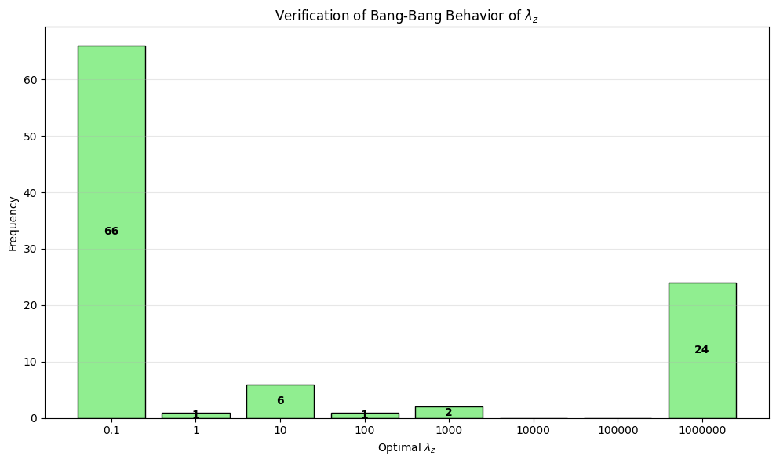

Classification from Partitioned Datasets
with Test-Time Side Information
2026
Feature space $\mathcal{X} \subset \mathbb{R}^d$, Label space $\mathcal{Y} = \{-1,1\}$, Side info space $\mathcal{Z} = \{-1,1\}$.
All samples drawn i.i.d. from the joint $(X,Y,Z)$, but labels and side info are never observed together.
$\exists\;\kappa > 0$ such that $\|X\| \leq \kappa$ a.s.
$X$ and its marginals have densities; CDFs are Lipschitz continuous.
$\mathbb{E}[(1,X)(1,X)^\top] \succ 0$
$\mathbb{P}(Y\!=\!1\mid X\!=\!x, Z\!=\!z) \notin \{0,1\}$ for all $x,z$; similarly for marginals.
Non-separability ensures all optimal weights have finite norm.
$\phi_u(x) = 2\,\mathbb{1}_{\{\sigma(u_c + u_x^\top x) > 0.5\}} - 1$, $u^\star = \arg\min_u L(u)$
Predicts $Z$ from $X$. Trained on $S$.
$\psi_v(x) = 2\,\mathbb{1}_{\{\sigma(v_c + v_x^\top x) > 0.5\}} - 1$, $v^\star = \arg\min_v T(v)$
Predicts $Y$ from $X$ alone (no side info).
$\pi_w(x,z) = 2\,\mathbb{1}_{\{\sigma(w_c + w_x^\top x + w_z z) > 0.5\}} - 1$, $w^\star = \arg\min_w R(w)$
Predicts $Y$ from $(X, Z)$. This is the target.
Regularized logistic population risk:
$$R_\lambda(w) = R(w) + \lambda_c|w_c|^2 + \lambda_x\|w_x\|^2 + \lambda_z|w_z|^2$$Replaces true $Z$ with imputed $\phi(X)$ — this is the risk our algorithm actually optimizes.
Regularization parameter: $\lambda = \left(\frac{1}{\sqrt{n}},\;\frac{1}{\sqrt{n}},\;\lambda_z\right)$
$\lambda_z$ is the only non-trivial choice — it encodes how much to trust the imputed side information.
With probability $\geq 1 - 4\delta$:
$O(1/\sqrt{n})$
Standard estimation error from primary data.
Scales with $\lambda_z$
Captures gain from side info; controlled by $\lambda_z$.
Scales with $1/\lambda_z$
Error from imputing $Z$; increases when $\lambda_z$ is small.
If $\frac{\Lambda_z^\star |w_z^\star|^2}{T(v^\star)-R(w^\star)} \geq 1 + \frac{\ln 2}{T(v^\star)-R(w^\star)}$, then $\Lambda_z^\star = \infty$.
$R(\hat{w}_\lambda) - R(w^\star) = \frac{C_1}{\sqrt{n}} + T(v^\star) - R(w^\star)$
Under complementary conditions, $\Lambda_z^\star = \frac{1}{\sqrt{n}} \to 0$.
$R(\hat{w}_\lambda) - R(w^\star) \leq \frac{C_1}{\sqrt{n}} + \mathsf{W}\ln 4\big(\frac{C_2}{\sqrt{m}} + L(u^\star)\big)$
For large $n,m$ and $L(u^\star) \leq 1$: the optimal $\Lambda_z^\star$ is either $\infty$ or $0$.
Either fully trust or completely ignore the side information — no middle ground!
For any learning algorithm $A$, there exists a distribution of $(X,Y,Z)$ such that:
Even with infinite data, the partitioned structure imposes an irreducible learning barrier.
Optimal $\lambda_z$ strongly concentrates at extreme values — confirming the bang-bang behavior predicted by theory.

Frequency of optimal $\lambda_z$ across 100 seeds
Addressed classification where labels and side information are never jointly observed during training.
Proposed a two-stage imputation algorithm with $\lambda_z$ controlling trust in imputed side information.
Upper bound decomposes into estimation error, regularization bias, and imputation error.
Optimal $\lambda_z$ is binary: either fully trust or completely ignore side information.
Excess risk is bounded away from zero for any algorithm — an irreducible barrier.
Explore strategic settings where agents choose whether to reveal side information.
Thank You!